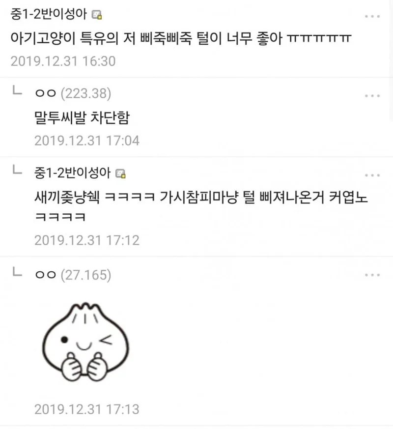
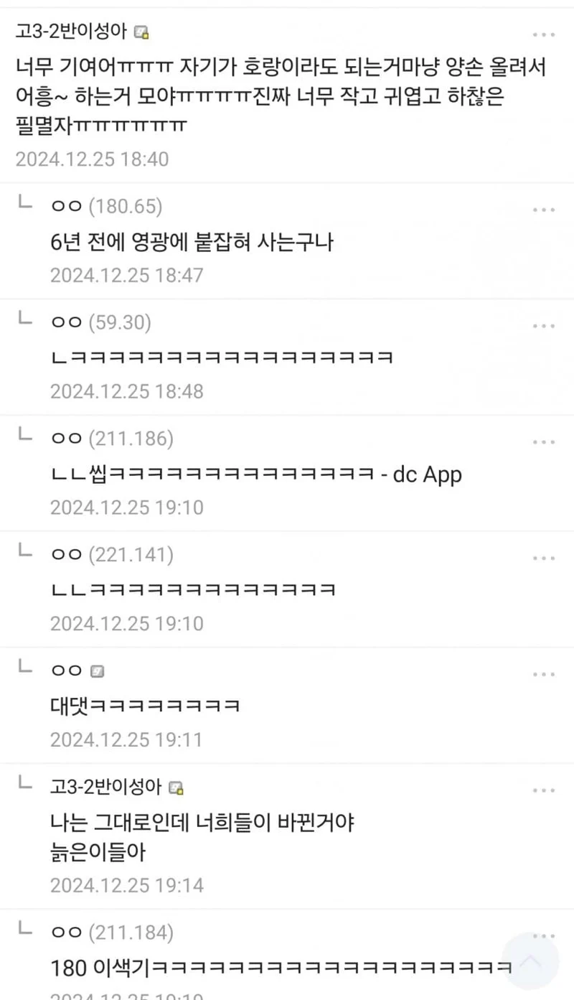

지나가는 유동시인 일침으로 사망


지나가는 유동시인 일침으로 사망
ㄹㅇ 창시자는 변하지 않았음 ㅋㅋㅋ
진짜 저렇게 잘 팰수가
그 낙지먹는 소년 만화같음
Vs 6년 전의 영광조차 없는 놈
딱걸렸쥬 ㅋㅋㅋㅋㅋㅋㅋㅋㅋㅋㅋ
중1에서 고 3으로 업그레이드 됐네
이제 대2-2반이성아 됨?
쉬었음청년이성아 됨
일병 이성아 됨
해병 이!성!악!!
근데 이제 고딩이면 지적한 놈이 진 것 아니야...?
어허 늙은이들 뒷목 잡고 쓰러진다
진짜 고딩이겠냐
6년 전"의" 가 맞다
성아 아직도 돌갤 하나
1짤 전부터 돌갤 네임드였는데
원히트원더를 욕하는 노히트언더들ㅋㅋ
벌써 8년전이네 ㄷㄷㄷ